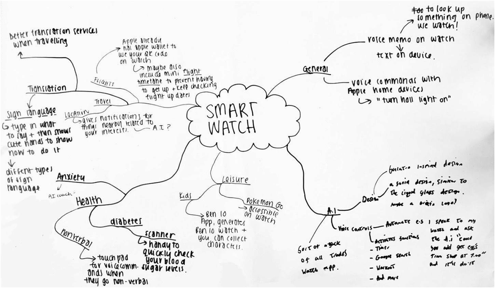
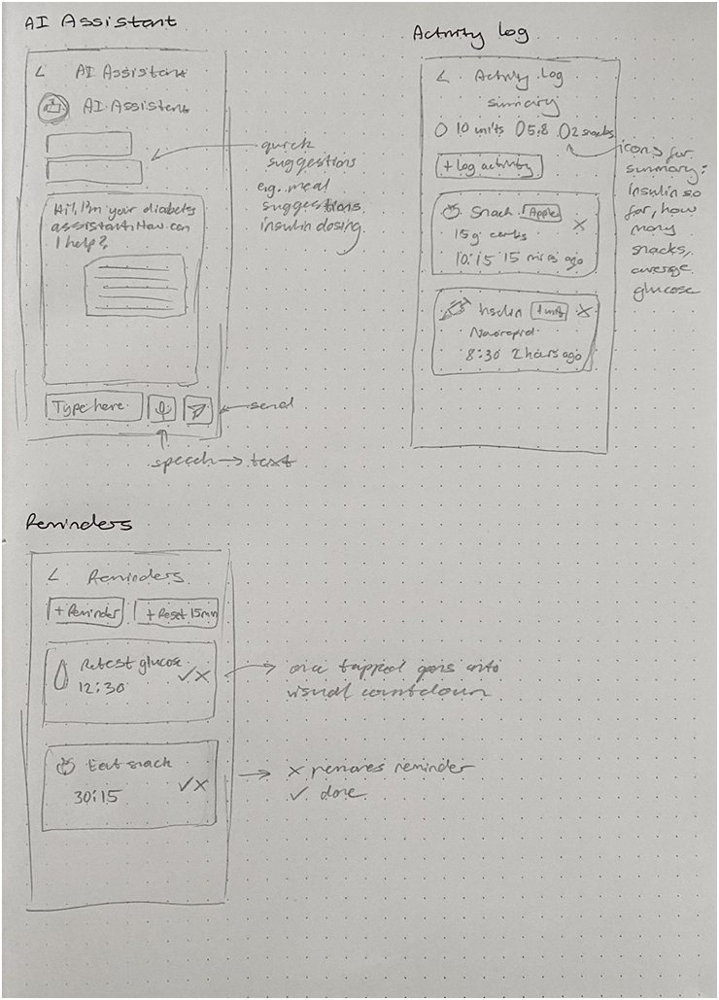
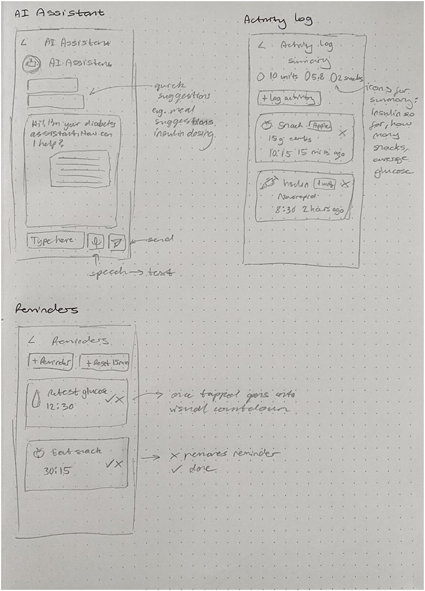
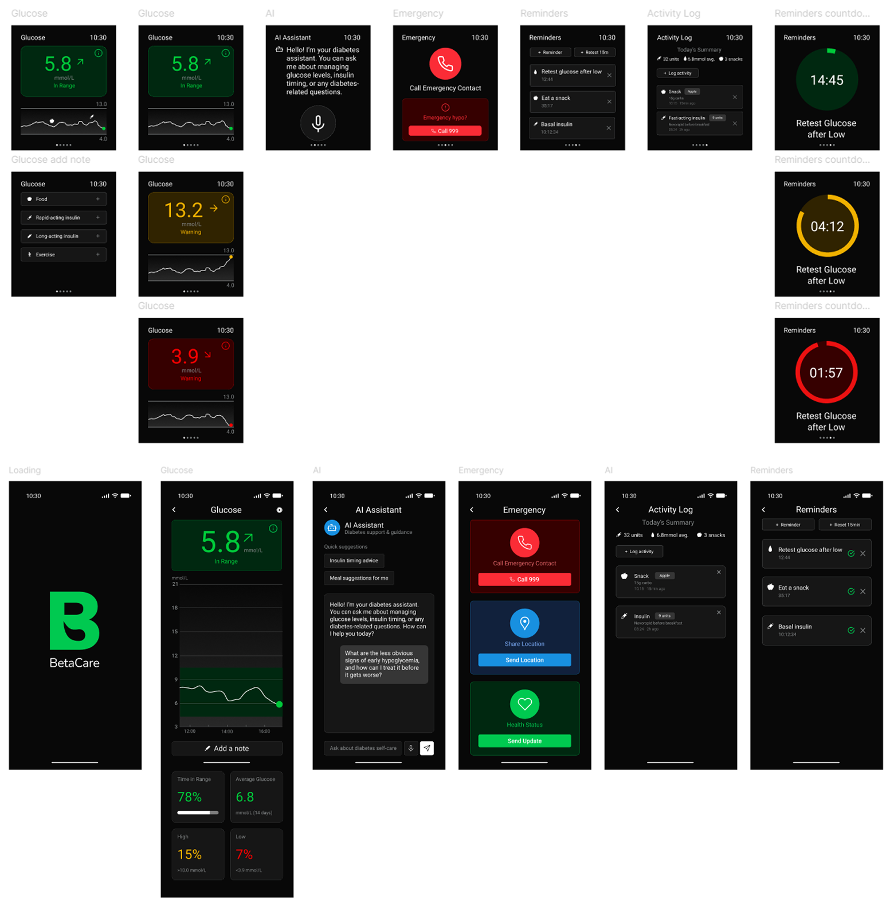

BetaCare
Logging made beta,
living made better.
BetaCare is a living journal for those managing their diabetes journey, logging readings and activities with a single tap. Its AI quietly tracks data to spot emerging trends and offer timely, tailored nudges. It works as a proactive partner that keeps the user informed, confident, and in control every day.
Brief
This project required designing a digital concept through at least three key screens. Alongside the interface design, I developed a supporting style guide and visual grammar to establish a consistent brand identity. The final outcome was a set of high‑resolution mock‑ups that showcased both the brand identity and user experience. To push the brief further, I also created a mobile companion app, an opportunity to challenge myself and ensure the design system worked consistently across platforms.
Ideation
As part of the ideation phase, we ran a workshop exploring allegorical connections across diverse contexts such as health, wellness, education, and finance. One concept that stood out to me was a wellness journaling tracker, which naturally connected to ideas around health management. The theme of diabetes, in particular, resonated on a personal level—I've experienced it first hand and supported others navigating it. This gave me the confidence and motivation to design a more personalised and informative experience for people living with diabetes, ensuring the solution felt both empathetic and practical.
Research
To ground my concept in real user needs, I began with a competitor analysis of existing diabetes management and wellness apps, identifying both strengths and gaps in the current market. I then created a questionnaire and distributed it to my target audience—young teens through to adults living with type 1 diabetes. The responses provided valuable feedback on my early ideas, as well as suggestions for features they would like to see.
To gain deeper insights, I conducted an in‑depth interview with a friend who has type 1 diabetes, which gave me a more personal perspective on daily challenges and opportunities for improvement. After synthesising all of this feedback, I developed user personas and empathy maps to capture key behaviours, goals, and frustrations. These became the foundation for guiding design decisions and ensuring the final product remained empathetic, relevant, and user‑centred.
Concept
After reviewing my research, I identified that framing the app as a personal journal supported by an AI assistant was the most effective direction. The journaling aspect allows users to log key details such as meals, insulin, and daily habits, while the AI works in the background to recognise patterns and highlight harder‑to‑spot trends. Beyond data insights, the AI also provides personalised and immediate support—something many participants highlighted as valuable, especially since reaching a diabetes care team can often be difficult in urgent situations. This approach combines the familiarity of journaling with the intelligence of real‑time guidance, creating a tool that feels both supportive and empowering.
Sketching
I mapped out rough frames to explore the core structure of the smartwatch app, deciding on five main screens: Glucose, Emergency, AI Assistant, Activity Log, and Reminders. From the start, I aimed to keep the design consistent with the mobile companion app, while also expanding the mobile version to include a dashboard and richer detail. For example, the Emergency screen was initially planned to include contact details, location sharing, and health status across both platforms, but I refined this so the smartwatch focused only on the essentials: quick access to an emergency contact and a direct 999 call, while the mobile app carried the fuller set of information.

 

Digital Development
In developing the app, I moved from lo‑fi to hi‑fi wireframes with a clear goal: to design a simple, intuitive interface that makes logging medical information quick and stress‑free. Because diabetes management involves so much data, I focused on identifying the most essential inputs and presenting them in a way that felt approachable and easy to navigate. The journaling and AI assistant features were integrated seamlessly, ensuring they supported the core experience of logging and spotting trends without adding complexity.
Final Screens
Testing & Feedback
For testing, I returned to the same group who had completed my initial questionnaire and asked them to try the prototype. They responded positively, particularly appreciating the journaling feature and noting how straightforward the logging process felt. Overall, the feedback in class was very positive, confirming that the design was clear, intuitive, and met the user's needs, which I was very pleased about.
Final Design
The final step was preparing a presentation that walked through the app's flow and highlighted how the features came together to support users in managing their diabetes.